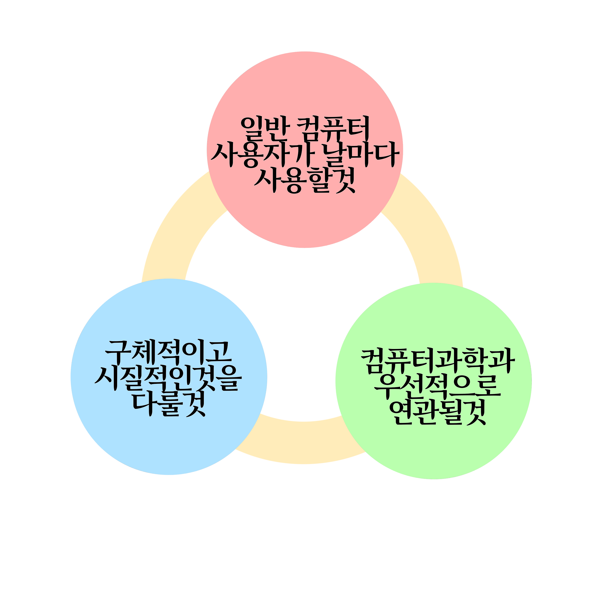

- 알고리즘이란?
- 위대한 알고리즘의 조건
- 검색엔진
- 페이지랭크

가장 중요한 기준은 일반 컴퓨터 사용자가 날마다 사용하는 알고리즘이어야 한다는 점이다.
두번쨰로 중요한 것은 알고리즘이 구체적이고 실질적인 것을 다루어야 한다는 것이다. 세번째 기준은 알고리즘이
CPU, 모니터, 네트워크 등 컴퓨터 하드웨어에 중점을 둔 기술이나 인터넷같은 인프라스트럭쳐 설계가 아닌 컴퓨터과학 이론에
우선적으로 연관돼야 한다는 점이다. 이는 컴퓨터과학에 대한 대중의 인식이 주로 소프트웨어나 하드웨어 설게에
국한되어 있기 때문이다.